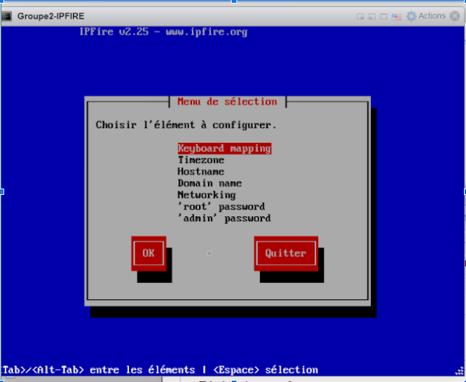
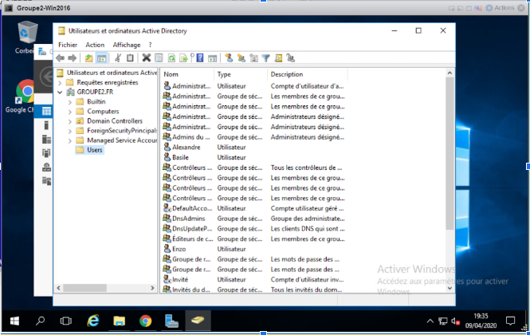
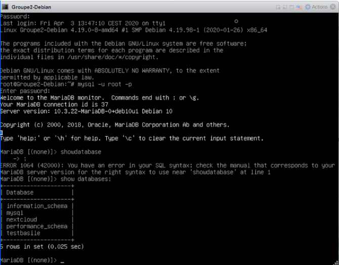
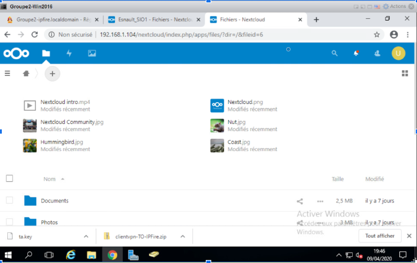
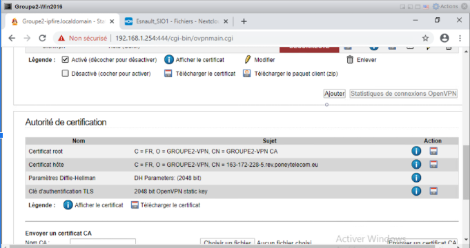
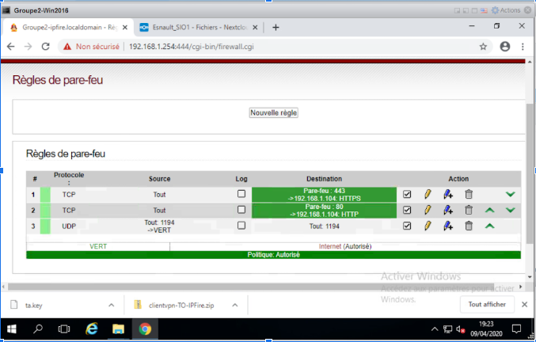

Travail effectuer
Phase 1: Créations des Vms sur ESXI
1 ere étape
Création d’un IPfire requis pour filtrer internet et protéger nos VM
2 eme étape
Configuration du windows 2016 et création d’utilisateur
3 eme étape
Installation du serveur lamp sous debian
4 eme étape
Création et utilisation de nextcloud sur debian
5 eme étape
 Génération de la clés VPN et utilisation d'open VPN